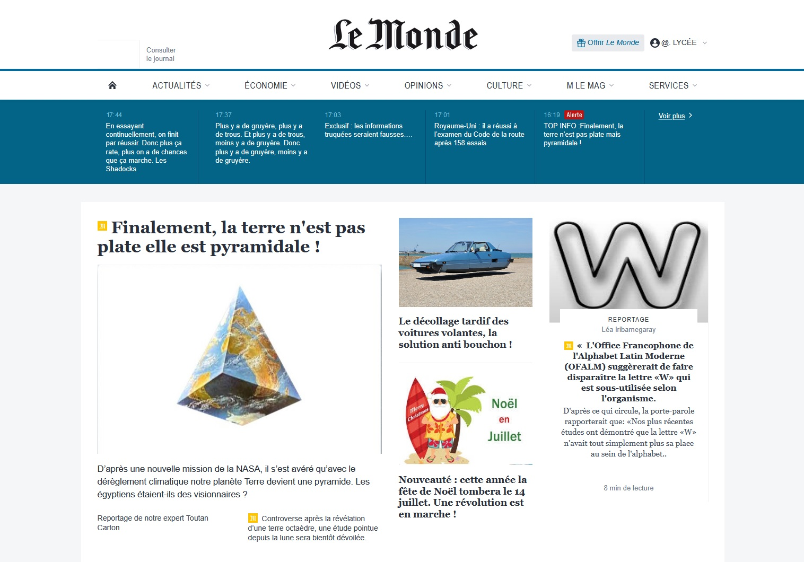

Objectifs
Montrer que l'on peut facilement détourner un site 'connu' pour faire passer des messages de type infox.
Apprendre à être vigilant sur le web.
Exemple :

Rendez-vous sur un site web d'information de référence ( Le Monde ou autre ), et choisissez un article que vous allez falsifier.
Enregistrer la page de l'article dans votre session, en faisant clic droit puis > Enregistrer sous.... type : page Web complète
Vous devez maintenant avoir deux éléments dans votre répertoire : un fichier article.html et un dossier article_fichiers qui contient des images, des scripts ou des feuilles de styles.
Modification de la page
Ouvrez simultanément le fichier article.html avec NotePad++ et Firefox
Procéder à la falsification dans l'éditeur de texte tant que cela reste acceptable dans un cadre scolaire...
Constatez le résultat en rafraîchissant la page Firefox (touche fonction F5)
Créé avec HelpNDoc Personal Edition: Créer des livres électroniques facilement